Charakterdesigns & Animationen
Charakterdesigns
Rund vier Jahre habe ich als Motion Designerin im EdTech-Bereich gearbeitet. Unter anderem habe ich Erklärvideos für Schulkinder animiert. Auch wenn ich heute nicht mehr hauptberuflich animiere, ist meine Liebe zu Charakterdesign und -animation geblieben. Inzwischen entstehen die kleinen Persönlichkeiten in meiner Freizeit.
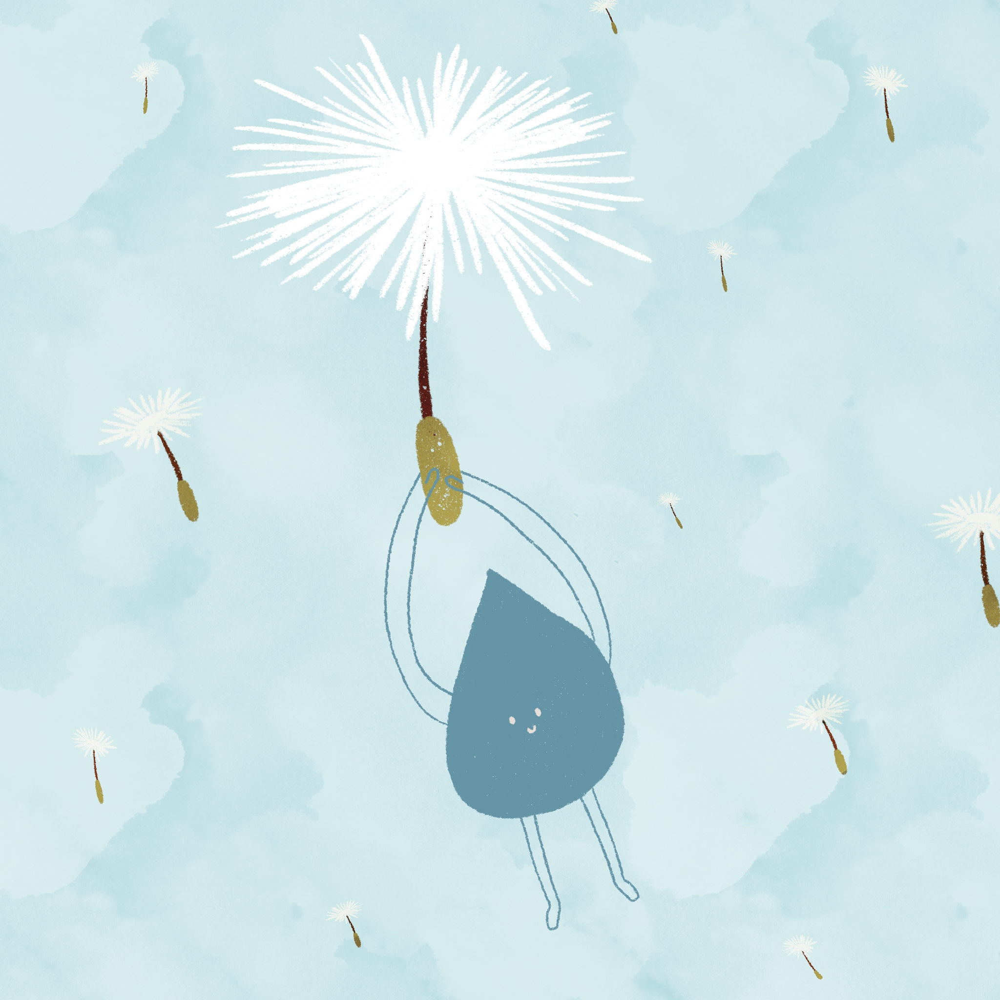
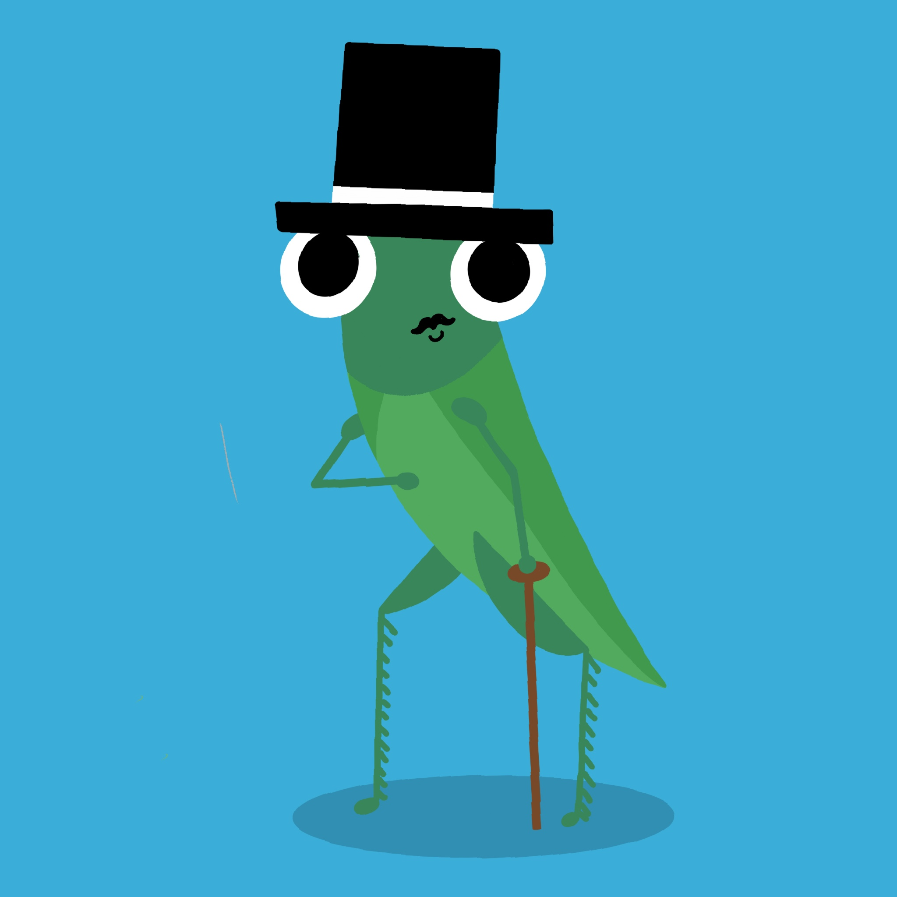
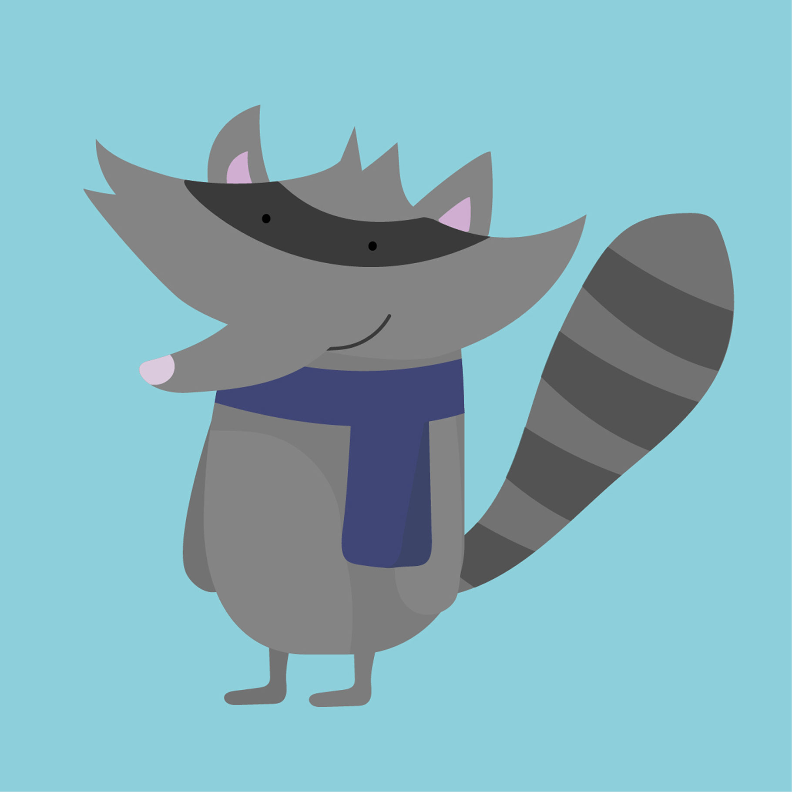
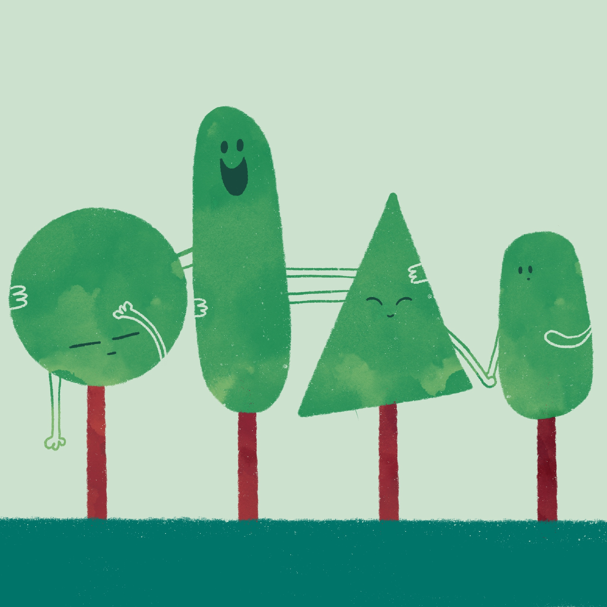
Animationen
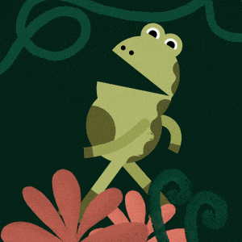
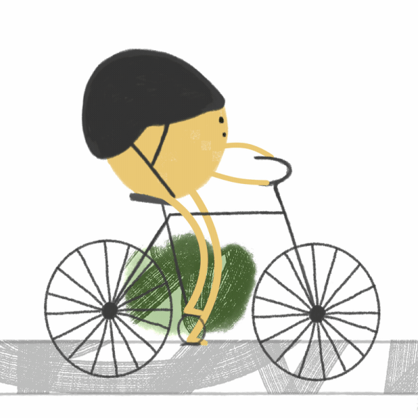
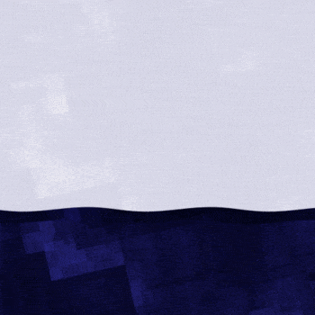
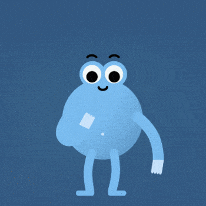
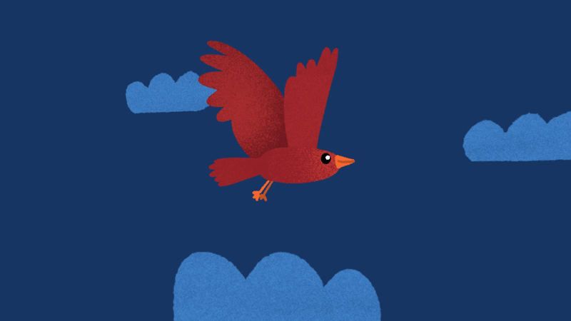
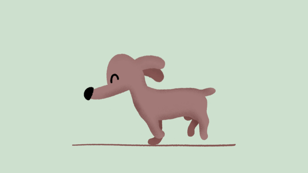
Things that are missing right now
Jede*r von uns hatte seine eigene Art, mit den Corona-Lockdowns umzugehen. Ich habe damals unter anderem die Dinge und Aktivitäten animiert, die mir besonders gefehlt haben. So ist diese kleine Sammlung von Pinguin-GIFs entstanden.
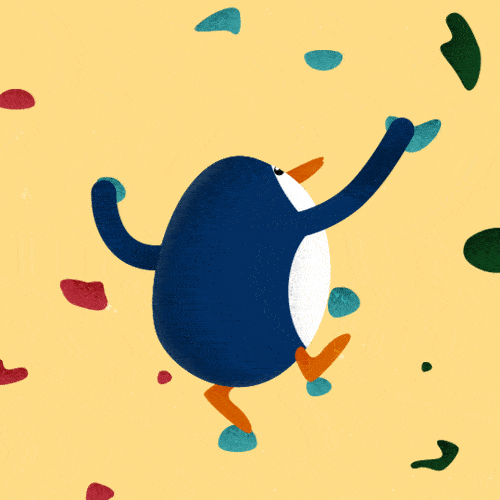
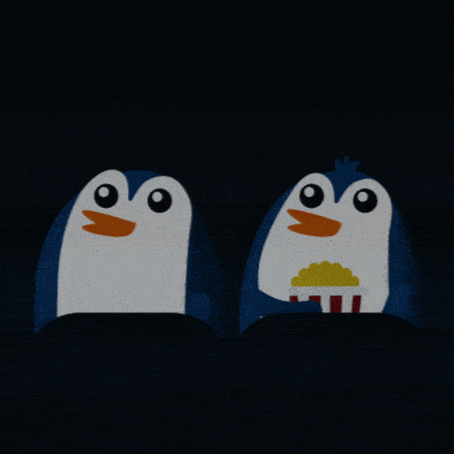
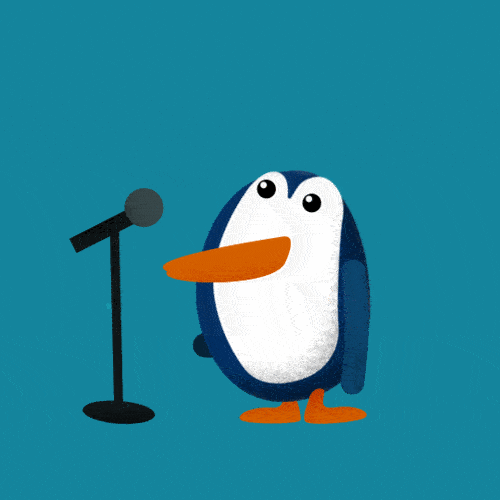
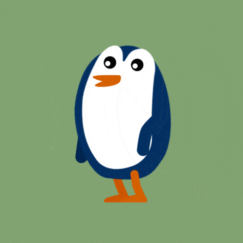